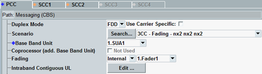
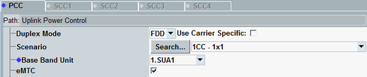
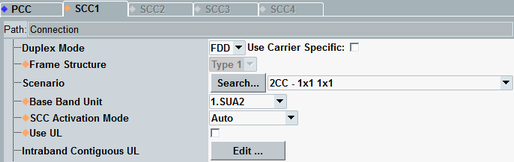
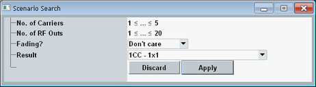
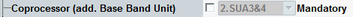
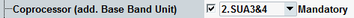
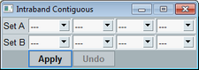

The general settings are at the top of the configuration dialog. Configure them according to your test scenario, before configuring any other settings.
The general settings reflect basic decisions: FDD or TDD signal, use MIMO / fading / carrier aggregation / eMTC or not.



- "PCC" tab: This tab is always active, independent of the selected scenario. The settings are either PCC-specific (marked by ), or they apply to the PCC and to the SCCs (if SCC tabs are active).
- "SCC<n>" tab: The tabs are active or inactive depending on the selected scenario. The settings are either SCC-specific (marked by ), or they apply to the PCC and to the SCC. In the latter case, changing the setting on one tab changes it also on the other tab. Most settings marked by are configurable per SCC. So different values can be set on the individual SCC tabs.
If a setting is individually configurable for PCC and SCC, two remote control commands are listed for the setting: one [:PCC] command and one :SCC command. If the SCC command has a suffix (:SCC<c>), the setting is individually configurable for each SCC.
The SCC tab contains a subset of the settings present on the PCC tab. For that reason, most screenshots in the following sections show the settings on the PCC tab. The general section on the SCC tab contains additional parameters that are not present on the PCC tab.
The general settings are described in the following.
Selects the duplex mode of the LTE signal: FDD or TDD.
If you enable "Use Carrier Specific", you can configure the duplex mode per component carrier.
Option R&S CMW-KS500 required for FDD, R&S CMW-KS550 required for TDD.
Remote command:Different test scenarios require different sets of parameters. Selecting a scenario hides/shows parts of the GUI as required by the scenario.
The active scenario determines, for example, whether MIMO and fading are used or not. It determines also the number of component carriers.
- "<n>CC" indicates the number of DL component carriers. So <n> greater 1 means DL carrier aggregation with <n> component carriers.
- Fading support is indicated by "- Fading -" in the scenario name.
- For each component carrier, an "axb" information is stated. The order is: PCC, SCC1, SCC2, and so on. 1x1 means SISO, nx2 means MIMO nx2, and so on.
The individual scenarios are only offered for selection, if the required software and hardware options are available.
For details, see "Scenarios".
Remote command:For each scenario, there is at least one ROUTe:LTE:SIGN<i>:SCENario:... command. For fading scenarios, there are several commands for the individual fading types.
All scenario commands are listed in "Scenario Selection and Signal Routing".
The button opens a dialog box for search of a scenario via filter criteria.

You can specify a minimum and maximum value for the number of component carriers and RF output paths. And you can specify whether you want scenarios with I/Q fading, without I/Q fading, or both ("without fading" includes scenarios with external RF fading).
The result list shows only the scenarios that match your filter criteria and for which you have the required software and hardware options. The result "Undefined" means that there are no such scenarios.
Select a scenario from the list and click "Apply" to set this scenario. Or click "Discard" to close the box without changing the scenario.
Selects the signaling unit to be used for a carrier. This setting is especially useful for multi-CMW setups, to control which carrier is available at which instrument.
A prefix "1." to "4." selects the CMW in a multi-CMW setup.
For an SUW, you always select a single SUW.
For an SUA, you select one or two SUA partitions. The offered values depend on the selected scenario. If you want to use 64-QAM in the UL of a carrier, always select two SUA partitions for that carrier. Otherwise, you cannot configure 64-QAM.
- "SUW4" selects SUW number 4 in a single-CMW setup.
- "2.SUW3" selects SUW number 3 in CMW number 2 in a multi-CMW setup.
- "3.SUA1" selects SUA partition 1 in CMW number 3.
- "1.SUA3&4" selects SUA partitions 3 and 4 in CMW number 1.
Configured via the scenario selection command, see "Scenario Selection and Signal Routing".
Configures an additional SUA (two SUA partitions) as coprocessor.
- The scenario does not need coprocessing. The setting is hidden.
- Coprocessing is optional. The scenario works without coprocessing. But depending on the settings, you need a coprocessor to reach the maximum throughput, especially for data application tests with the DAU.
- Coprocessing is mandatory. The scenario does not work without coprocessing.
- Optional coprocessing:
The checkbox enables/disables coprocessing. With disabled checkbox, "Not Used" is displayed.
With enabled checkbox, you can select a SUA. - Mandatory coprocessing:
The checkbox enables/disables the SUA selection. With disabled checkbox, the used default SUA selection is displayed.
With enabled checkbox, you can select a SUA.
To check which behavior applies to which scenario, refer to the tables in "Scenarios".
Remote command:Configured via the scenario selection command, see "Scenario Selection and Signal Routing".
Enables enhanced machine type communication (eMTC).
eMTC is only supported for FDD, for the scenario "1CC - 1x1". Option R&S CMW-KS590 is required.
For a short introduction, see "eMTC".
For eMTC-specific settings, see "eMTC Settings".
Remote command:This parameter is displayed for the fading scenarios. It selects between internal and external fading. For internal fading, it also selects a fader.
- Internal fading with SUA
The fader setting selects an SUA partition. The numbering is reversed, so that the lowest fader number selects the highest SUA partition. This reverse numbering allows you to select the same number for the fader and the baseband unit, because they address different SUA partitions.
Example: Baseband unit "2.SUA4" selects SUA partition 4 in CMW 2. Fader "2.Fader4" selects SUA partition 1 in CMW 2. So they can be combined.
The fader selection offers only values compatible with the baseband setting. If there is only one possible value, the selection is grayed out, displaying this value. - Internal fading with SUW
The fader setting selects an I/Q board. It offers only values compatible with the baseband setting. - External fading
External fading is only possible with SUW plus I/Q board and only supported for up to two DL TX antennas per carrier. There is no fader selection.
Configured via the scenario selection command, see "Scenario Selection and Signal Routing".
This setting is only displayed on the SCC tabs.
- "Type 1" = normal FDD operation (requires R&S CMW-KS500)
- "Type 2" = normal TDD operation (requires R&S CMW-KS550)
- "Type 3" = LAA operation mode (requires R&S CMW-KS514)
The value is set automatically depending on the configured duplex mode and operating band. For "Type 3", select TDD and band 46.
For the TDD user-defined band, the setting is configurable.
Remote command:This setting is only displayed on the SCC tabs. It configures the activation mode of the SCCs for carrier aggregation scenarios. The setting applies to all SCCs (same value on all SCC tabs).
Option R&S CMW-KS512 is required for the modes "Manual" and "Semiautomatic".
See also "SCC States".
"Auto" | The SCC is activated automatically, so that the state "MAC Activated" is reached. If the PCC RRC connection is kept after the attach ("Keep RRC Connection"), the SCC activation is done at UE attach. If the PCC RRC connection is not kept after the attach, the SCC activation is done with the next RRC connection establishment. |
"Semiautomatic" | Initiate the SCC activation manually. As a result, all state transitions required to reach the state "MAC Activated" are performed. This mode is useful if you want to establish first a PCC connection and add the SCC connection later on after some tests. |
"Manual" | Initiate each state transition step separately. There are three steps from "SCC Off" via "SCC On" and "RRC Added" to "MAC Activated". This mode is useful for debugging of the UE. From each state, you can go back to the previous state or continue to the next state. For example from state "RRC Added", you can go to "MAC Activated" or to "SCC On". |
This setting is only displayed on the SCC tabs. It activates the uplink for the SCC.
You can activate the uplink of maximum three SCCs, resulting in uplink carrier aggregation with four carriers (PCC plus three SCC).
SCC uplink is not allowed for frame structure type 3.
Option R&S CMW-KS512 is required for UL carrier aggregation.
Remote command:This button opens a dialog box for alignment of component carrier uplinks according to the rules for intraband contiguous uplink carrier aggregation. Enable the desired SCC uplinks before opening the dialog box.

The dialog box contains one or two rows ("Set A", "Set B"), depending on the selected scenario. The number of columns equals the number of component carriers of the scenario.
Each line defines a set of component carriers with contiguous allocation. For a scenario with four carriers, for example, you can assign two carriers to one set and two carriers to the other set. Or you can assign two, three or four carriers to one set and no carrier to the other set.
The leftmost setting of a set selects the master carrier. The set uses the operating band of the master carrier. And the master carrier keeps its configured frequency.
When you press "Apply", all other carriers of the set are automatically aligned to the master carrier. Their frequency settings are grayed out and coupled to the master carrier frequency. You can modify the frequency and band of the master carrier. The other carriers follow the master carrier, maintaining the contiguous allocation (as far as possible - selecting a too small band, for example, results in an error message).
If possible, the carriers are aligned in the spectrum in the order selected in the dialog box. So the frequency increases from the leftmost entry to the rightmost entry. Carriers that do not fit into the band to the right of the master carrier are positioned to the left of the master carrier.
Remote command: